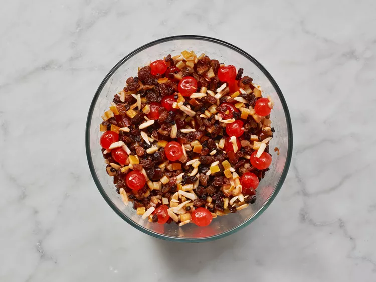
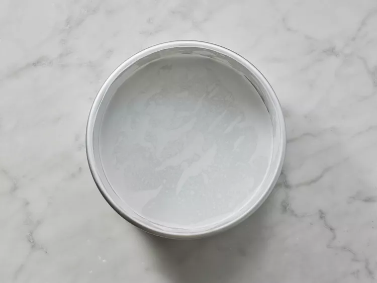
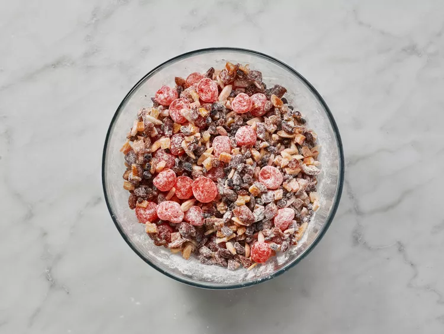
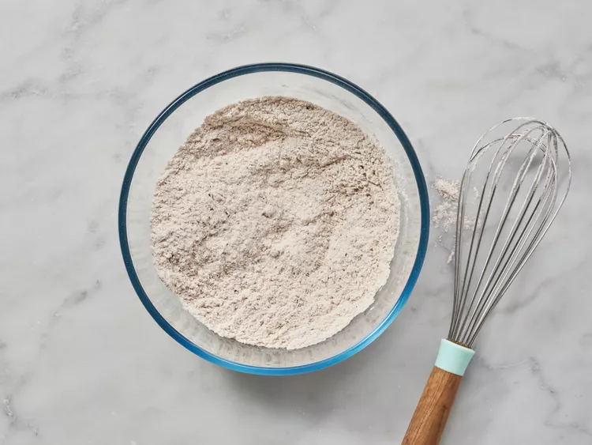
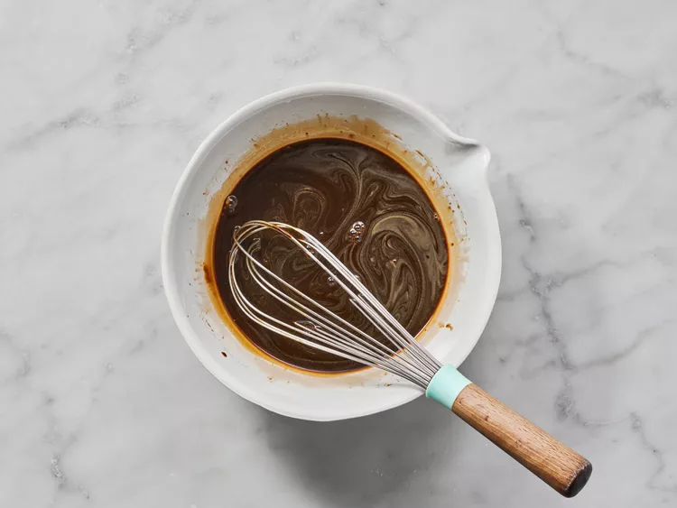
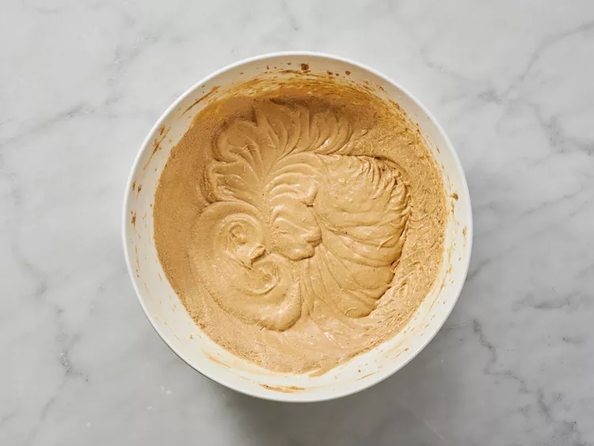
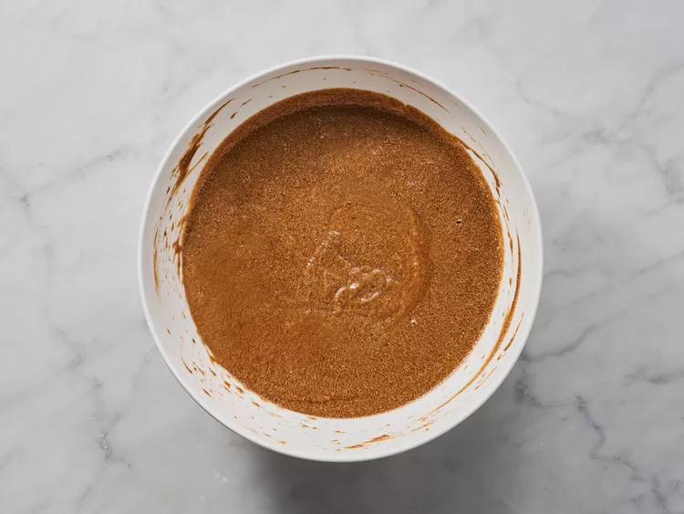
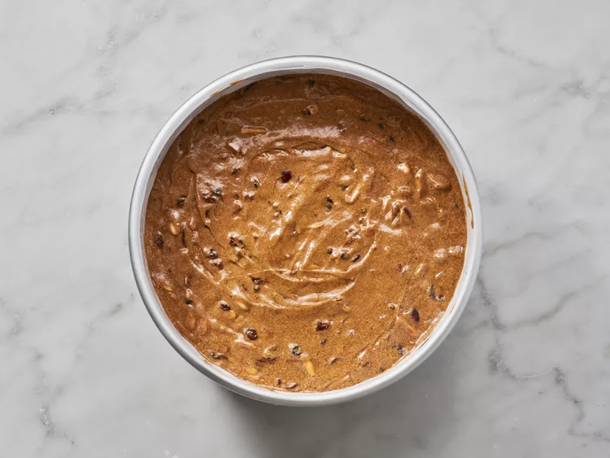
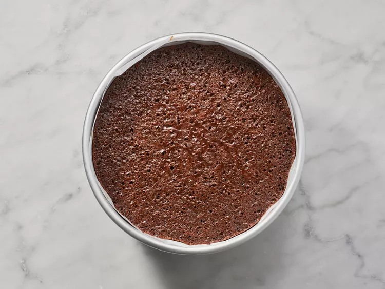
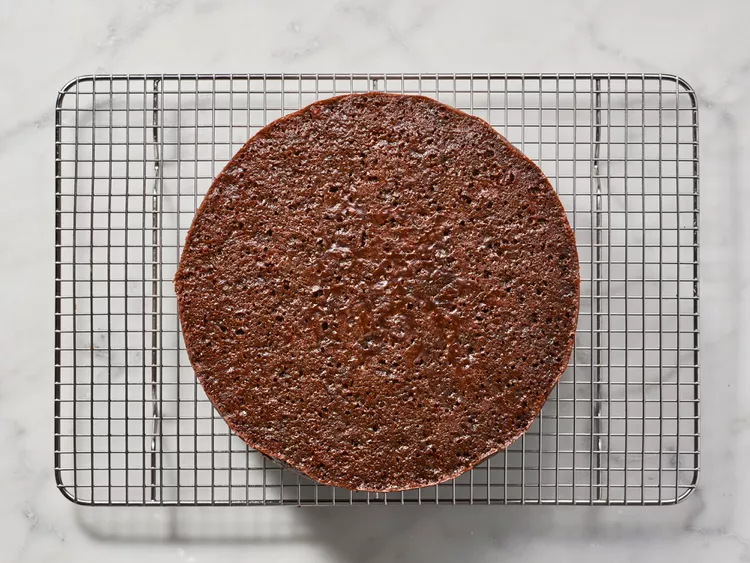

Recipe of cake
This festive Christmas cake is made with dried fruits and candied citrus peel
soaked in brandy to add flavor and make a rich, moist fruitcake for Christmas.
Delicious as-is or cover it with almond paste and royal icing.
Finished cake:

Ingredients
- Candied and dried fruits: This Christmas fruitcake calls for candied cherries and citrus peels; dried currants and raisins; and dates.
- Nuts: Blanched, slivered almonds add nutty flavor and welcome crunch.
- Brandy: The fruits are soaked in brandy overnight to enhance the festive, boozy flavor of this Christmas cake.
- Flour: All-purpose flour creates structure and helps hold the batter together.
- Spices and seasonings: This Christmas cake is flavored with cloves, allspice, cinnamon, and a pinch of salt.
- Baking soda: Baking soda acts as a leavener, which means it helps the cake rise.
- Molasses and apple juice: A blend of molasses and apple juice lends moisture and adds flavor.
- Butter: A cup of unsalted butter ensures a moist cake and adds richness.
- Brown sugar: Instead of white sugar, this Christmas cake recipe calls for warm and cozy brown sugar.
- Eggs: Six whole eggs add moisture and help bind the cake batter together.
-
Gather all ingredients.

-
Combine candied cherries, citrus peel, and almonds in a medium bowl. Add raisins, currants, and dates; pour in brandy and stir to combine. Cover and let sit for 2 hours or overnight.

-
When ready to bake, preheat the oven to 275 degrees F (135 degrees C). Grease a deep 8-inch fruitcake pan, line it with parchment paper, and grease again.

-
Dredge brandy-soaked fruit with 1/2 cup flour.

-
Whisk together remaining 2 cups flour, cloves, allspice, cinnamon, baking soda, and salt in a medium bowl.

-
Stir molasses and apple juice together in a separate bowl until combined.

-
Cream butter in a large bowl until light and fluffy. Gradually blend in brown sugar and eggs.

-
Add flour mixture in 4 batches, alternating with molasses mixture.

-
Fold in floured fruit, then turn batter into the prepared pan.

-
Bake in the preheated oven until a toothpick inserted into the center of the cake comes out clean, 3 to 3 1/2 hours.

-
Remove cake from the pan, and lift off the parchment paper. Cool cake completely, then wrap loosely in waxed paper. Store in an airtight container in a cool, dry place for up to 2 months, or in the refrigerator for longer.

Enjoy your meal!